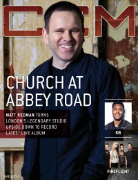

CMnexus: Contemporary Christian culture, music, and media.
|
|
Matt RedmanOn the cover|  | 1 June 2015
CCM Digital | Media coverage:- Mar 1998 in CCM "Talent Pool: Master and the Musician", by Wendy Lee Nentwig
- Dec 1999 in Charisma "The Psalmist For A New Generation"
- Aug 2000 in CCM "What Is Worship?"
- May 2002 in Worship Leader "Interview: Matt Redman"
- Aug 2002 in CCM "Cityscape: True Communion", by Mike Rimmer
- Mar 2003 in CCM "Other Brits We Like", by Annika Morgan
- Jun 2004 in CCM "Insider: Q & A With Matt Redman"
- Mar 2005 in CCM "Insider: Better Is One Day: Passion '05 Update"
- Sep 2005 in Worship Leader "Song Story: The Heart of Worship", by Jeremy Armstrong
- Jan 2006 in CCM "Our Love Is Loud: The Family Portrait"
- Mar 2006 in Worship Leader "Table Talk: How to Dismantle an Atomic Song", by Andrew Philip
- Apr 2006 in CCM "Standing Room Only: Indescribable Tour", by Andy Argyrakis
- Jan 2007 in CCM "Insider: Matt Redman", by David McCreary
- Feb 2007 in CCM "Global Worship", by Andree Farias
- Feb 2007 in Charisma "Buzz Spotlight: Good News", by DeWayne Hamby
- Apr 2007 in Christianity Today "Passion Takes It Higher", by Collin Hansen
- May 2007 in CCM "The Beautiful News About Worship"
- Jul 2011 in Christianity Today "Two Minutes With...: Matt Redman"
- Jul 2011 in Group "Ideas: Ministry and Media: Matt Redman", by Scott Firestone IV
- Jan 2012 in Relevant "Accidental Movement", by Tyler Charles
- Nov 2012 in CCM Digital "Worship: (Worship) Like Never Before", by Emily Durbin
- Jul 2013 in Relevant "The Drop: Chris Tomlin: Earth's Most Sung Artist"
- Nov 2013 in CCM Digital "Worship: The Story Behind Matt Redman "10,000 Reasons"", by Caroline Lusk
- Dec 2013 in CCM Digital "Worship: Seek & You Shall Find", by Caroline Lusk
- Jan 2014 in Relevant "The Drop: Profile: Matt Redman"
- 15 Jul 2014 in CCM Digital "One Last Look: Finding Mercy", by Caroline Lusk
- 1 Jun 2015 in CCM Digital "Unbroken and in Agreement", by Kevin Sparkman
- 1 Nov 2017 in CCM Digital "Better Together", by Matt Conner
Albums & reviews:1998: The Friendship and the Fear1999: The Heart of Worship2000: The Father's Song2002: Where Angels Fear to Tread2003: Intimacy + The Friendship and the Fear2004: Facedown2005: Blessed Be Your Name: The Songs Of Matt Redman Vol. 12006: Beautiful News2009: We Shall Not Be Shaken2010: Ultimate Collection2011: 10,000 Reasons2012: Sing Like Never Before: The Essential Collection2013: Your Grace Finds Me (Live)2015: Unbroken Praise2016: These Christmas Lights2017: Glory Song Award Summary (Nominations / Wins)Dove Awards2006 Dove Awards- Praise & Worship Album: Blessed Be Your Name: The Songs Of Matt Redman Vol. 1
- Worship Song: "Blessed Be Your Name"
2012 Dove Awards- Praise & Worship Album: 10,000 Reasons
2013 Dove Awards2016 Dove Awards2017 Dove AwardsGrammy Awards- 2012 Grammy Awards
- Best Gospel/Contemporary Christian Music: "10,000 Reasons (Bless The Lord)"
- Best Contemporary Christian Music Song: "10,000 Reasons (Bless The Lord)"
2013 Grammy Awards- Best Contemporary Christian Music Album: Your Grace Finds Me (Live)
Books about Matt Redman- "Matt Redman" in The Encyclopedia of Contemporary Christian Music (Mark Allan Powell, 2002)
Published articles:1 article credited in Christianity Today: 2011.1 article credited in YouthWorker: 2011.1 article credited in Charisma: 2013. |